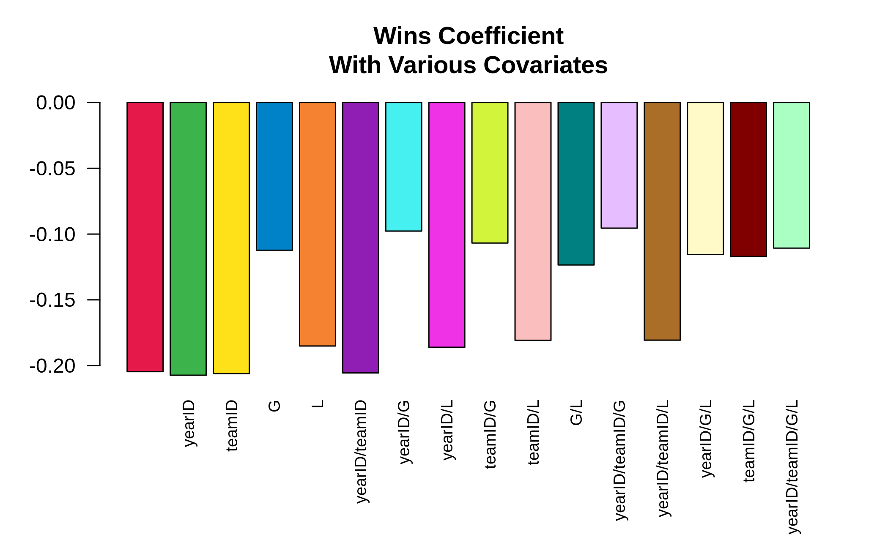
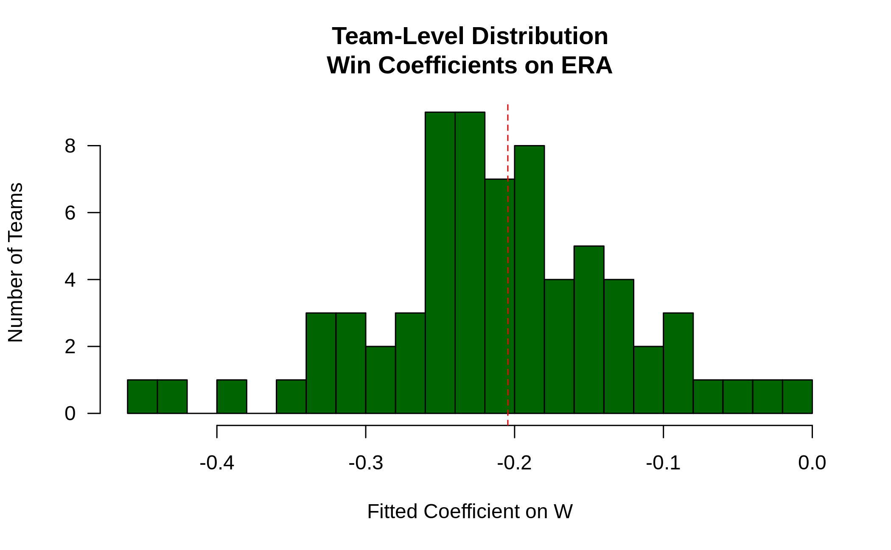

Using .SD for Data Analysis
2019-12-31
Source:../../vignettes/datatable-sd-usage.Rmd
datatable-sd-usage.RmdThis vignette will explain the most common ways to use the .SD variable in your data.table analyses. It is an adaptation of this answer given on StackOverflow.
What is .SD?
In the broadest sense, .SD is just shorthand for capturing a variable that comes up frequently in the context of data analysis. It can be understood to stand for Subset, Selfsame, or Self-reference of the Data. That is, .SD is in its most basic guise a reflexive reference to the data.table itself – as we’ll see in examples below, this is particularly helpful for chaining together “queries” (extractions/subsets/etc using [). In particular, this also means that .SD is itself a data.table (with the caveat that it does not allow assignment with :=).
The simpler usage of .SD is for column subsetting (i.e., when .SDcols is specified); as this version is much more straightforward to understand, we’ll cover that first below. The interpretation of .SD in its second usage, grouping scenarios (i.e., when by = or keyby = is specified), is slightly different, conceptually (though at core it’s the same, since, after all, a non-grouped operation is an edge case of grouping with just one group).
Loading and Previewing Lahman Data
To give this a more real-world feel, rather than making up data, let’s load some data sets about baseball from the Lahman database. In typical R usage, we’d simply load these data sets from the Lahman R package; in this vignette, we’ve pre-downloaded them directly from the package’s GitHub page instead.
load('Teams.RData')
setDT(Teams)
Teams
# yearID lgID teamID franchID divID Rank G Ghome W L DivWin WCWin LgWin
# 1: 1871 NA BS1 BNA <NA> 3 31 NA 20 10 <NA> <NA> N
# 2: 1871 NA CH1 CNA <NA> 2 28 NA 19 9 <NA> <NA> N
# 3: 1871 NA CL1 CFC <NA> 8 29 NA 10 19 <NA> <NA> N
# 4: 1871 NA FW1 KEK <NA> 7 19 NA 7 12 <NA> <NA> N
# 5: 1871 NA NY2 NNA <NA> 5 33 NA 16 17 <NA> <NA> N
# ---
# 2891: 2018 NL SLN STL C 3 162 81 88 74 N N N
# 2892: 2018 AL TBA TBD E 3 162 81 90 72 N N N
# 2893: 2018 AL TEX TEX W 5 162 81 67 95 N N N
# 2894: 2018 AL TOR TOR E 4 162 81 73 89 N N N
# 2895: 2018 NL WAS WSN E 2 162 81 82 80 N N N
# WSWin R AB H X2B X3B HR BB SO SB CS HBP SF RA ER ERA CG
# 1: <NA> 401 1372 426 70 37 3 60 19 73 16 NA NA 303 109 3.55 22
# 2: <NA> 302 1196 323 52 21 10 60 22 69 21 NA NA 241 77 2.76 25
# 3: <NA> 249 1186 328 35 40 7 26 25 18 8 NA NA 341 116 4.11 23
# 4: <NA> 137 746 178 19 8 2 33 9 16 4 NA NA 243 97 5.17 19
# 5: <NA> 302 1404 403 43 21 1 33 15 46 15 NA NA 313 121 3.72 32
# ---
# 2891: N 759 5498 1369 248 9 205 525 1380 63 32 80 48 691 622 3.85 1
# 2892: N 716 5475 1415 274 43 150 540 1388 128 51 101 50 646 602 3.74 0
# 2893: N 737 5453 1308 266 24 194 555 1484 74 35 88 34 848 783 4.92 1
# 2894: N 709 5477 1336 320 16 217 499 1387 47 30 58 37 832 772 4.85 0
# 2895: N 771 5517 1402 284 25 191 631 1289 119 33 59 40 682 649 4.04 2
# SHO SV IPouts HA HRA BBA SOA E DP FP name
# 1: 1 3 828 367 2 42 23 243 24 0.834 Boston Red Stockings
# 2: 0 1 753 308 6 28 22 229 16 0.829 Chicago White Stockings
# 3: 0 0 762 346 13 53 34 234 15 0.818 Cleveland Forest Citys
# 4: 1 0 507 261 5 21 17 163 8 0.803 Fort Wayne Kekiongas
# 5: 1 0 879 373 7 42 22 235 14 0.840 New York Mutuals
# ---
# 2891: 8 43 4366 1354 144 593 1337 133 151 0.978 St. Louis Cardinals
# 2892: 14 52 4345 1236 164 501 1421 85 136 0.986 Tampa Bay Rays
# 2893: 5 42 4293 1516 222 491 1121 120 168 0.980 Texas Rangers
# 2894: 3 39 4301 1476 208 551 1298 101 138 0.983 Toronto Blue Jays
# 2895: 7 40 4338 1320 198 487 1417 64 115 0.989 Washington Nationals
# park attendance BPF PPF teamIDBR teamIDlahman45
# 1: South End Grounds I NA 103 98 BOS BS1
# 2: Union Base-Ball Grounds NA 104 102 CHI CH1
# 3: National Association Grounds NA 96 100 CLE CL1
# 4: Hamilton Field NA 101 107 KEK FW1
# 5: Union Grounds (Brooklyn) NA 90 88 NYU NY2
# ---
# 2891: Busch Stadium III 3403587 97 96 STL SLN
# 2892: Tropicana Field 1154973 97 97 TBR TBA
# 2893: Rangers Ballpark in Arlington 2107107 112 113 TEX TEX
# 2894: Rogers Centre 2325281 97 98 TOR TOR
# 2895: Nationals Park 2529604 106 105 WSN MON
# teamIDretro
# 1: BS1
# 2: CH1
# 3: CL1
# 4: FW1
# 5: NY2
# ---
# 2891: SLN
# 2892: TBA
# 2893: TEX
# 2894: TOR
# 2895: WAS
load('Pitching.RData')
setDT(Pitching)
Pitching
# playerID yearID stint teamID lgID W L G GS CG SHO SV IPouts H ER
# 1: bechtge01 1871 1 PH1 NA 1 2 3 3 2 0 0 78 43 23
# 2: brainas01 1871 1 WS3 NA 12 15 30 30 30 0 0 792 361 132
# 3: fergubo01 1871 1 NY2 NA 0 0 1 0 0 0 0 3 8 3
# 4: fishech01 1871 1 RC1 NA 4 16 24 24 22 1 0 639 295 103
# 5: fleetfr01 1871 1 NY2 NA 0 1 1 1 1 0 0 27 20 10
# ---
# 46695: zamorda01 2018 1 NYN NL 1 0 16 0 0 0 0 27 6 3
# 46696: zastrro01 2018 1 CHN NL 1 0 6 0 0 0 0 17 6 3
# 46697: zieglbr01 2018 1 MIA NL 1 5 53 0 0 0 10 156 49 23
# 46698: zieglbr01 2018 2 ARI NL 1 1 29 0 0 0 0 65 22 9
# 46699: zimmejo02 2018 1 DET AL 7 8 25 25 0 0 0 394 140 66
# HR BB SO BAOpp ERA IBB WP HBP BK BFP GF R SH SF GIDP
# 1: 0 11 1 NA 7.96 NA 7 NA 0 146 0 42 NA NA NA
# 2: 4 37 13 NA 4.50 NA 7 NA 0 1291 0 292 NA NA NA
# 3: 0 0 0 NA 27.00 NA 2 NA 0 14 0 9 NA NA NA
# 4: 3 31 15 NA 4.35 NA 20 NA 0 1080 1 257 NA NA NA
# 5: 0 3 0 NA 10.00 NA 0 NA 0 57 0 21 NA NA NA
# ---
# 46695: 1 3 16 0.194 3.00 1 0 1 0 36 4 3 1 0 1
# 46696: 0 4 3 0.286 4.76 0 0 1 0 26 2 3 0 0 0
# 46697: 7 17 37 0.254 3.98 4 1 2 0 213 23 25 0 1 11
# 46698: 1 8 13 0.265 3.74 2 0 0 0 92 1 9 0 1 3
# 46699: 28 26 111 0.269 4.52 0 1 2 0 556 0 76 2 5 4Readers up on baseball lingo should find the tables’ contents familiar; Teams records some statistics for a given team in a given year, while Pitching records statistics for a given pitcher in a given year. Please do check out the documentation and explore the data yourself a bit before proceeding to familiarize yourself with their structure.
.SD on Ungrouped Data
To illustrate what I mean about the reflexive nature of .SD, consider its most banal usage:
Pitching[ , .SD]
# playerID yearID stint teamID lgID W L G GS CG SHO SV IPouts H ER
# 1: bechtge01 1871 1 PH1 NA 1 2 3 3 2 0 0 78 43 23
# 2: brainas01 1871 1 WS3 NA 12 15 30 30 30 0 0 792 361 132
# 3: fergubo01 1871 1 NY2 NA 0 0 1 0 0 0 0 3 8 3
# 4: fishech01 1871 1 RC1 NA 4 16 24 24 22 1 0 639 295 103
# 5: fleetfr01 1871 1 NY2 NA 0 1 1 1 1 0 0 27 20 10
# ---
# 46695: zamorda01 2018 1 NYN NL 1 0 16 0 0 0 0 27 6 3
# 46696: zastrro01 2018 1 CHN NL 1 0 6 0 0 0 0 17 6 3
# 46697: zieglbr01 2018 1 MIA NL 1 5 53 0 0 0 10 156 49 23
# 46698: zieglbr01 2018 2 ARI NL 1 1 29 0 0 0 0 65 22 9
# 46699: zimmejo02 2018 1 DET AL 7 8 25 25 0 0 0 394 140 66
# HR BB SO BAOpp ERA IBB WP HBP BK BFP GF R SH SF GIDP
# 1: 0 11 1 NA 7.96 NA 7 NA 0 146 0 42 NA NA NA
# 2: 4 37 13 NA 4.50 NA 7 NA 0 1291 0 292 NA NA NA
# 3: 0 0 0 NA 27.00 NA 2 NA 0 14 0 9 NA NA NA
# 4: 3 31 15 NA 4.35 NA 20 NA 0 1080 1 257 NA NA NA
# 5: 0 3 0 NA 10.00 NA 0 NA 0 57 0 21 NA NA NA
# ---
# 46695: 1 3 16 0.194 3.00 1 0 1 0 36 4 3 1 0 1
# 46696: 0 4 3 0.286 4.76 0 0 1 0 26 2 3 0 0 0
# 46697: 7 17 37 0.254 3.98 4 1 2 0 213 23 25 0 1 11
# 46698: 1 8 13 0.265 3.74 2 0 0 0 92 1 9 0 1 3
# 46699: 28 26 111 0.269 4.52 0 1 2 0 556 0 76 2 5 4That is, Pitching[ , .SD] has simply returned the whole table, i.e., this was an overly verbose way of writing Pitching or Pitching[]:
In terms of subsetting, .SD is still a subset of the data, it’s just a trivial one (the set itself).
Column Subsetting: .SDcols
The first way to impact what .SD is is to limit the columns contained in .SD using the .SDcols argument to [:
# W: Wins; L: Losses; G: Games
Pitching[ , .SD, .SDcols = c('W', 'L', 'G')]
# W L G
# 1: 1 2 3
# 2: 12 15 30
# 3: 0 0 1
# 4: 4 16 24
# 5: 0 1 1
# ---
# 46695: 1 0 16
# 46696: 1 0 6
# 46697: 1 5 53
# 46698: 1 1 29
# 46699: 7 8 25This is just for illustration and was pretty boring. But even this simply usage lends itself to a wide variety of highly beneficial / ubiquitous data manipulation operations:
Column Type Conversion
Column type conversion is a fact of life for data munging. Though fwrite recently gained the ability to declare the class of each column up front, not all data sets come from fread (e.g. in this vignette) and conversions back and forth among character/factor/numeric types are common. We can use .SD and .SDcols to batch-convert groups of columns to a common type.
We notice that the following columns are stored as character in the Teams data set, but might more logically be stored as factors:
# teamIDBR: Team ID used by Baseball Reference website
# teamIDlahman45: Team ID used in Lahman database version 4.5
# teamIDretro: Team ID used by Retrosheet
fkt = c('teamIDBR', 'teamIDlahman45', 'teamIDretro')
# confirm that they're stored as `character`
Teams[ , sapply(.SD, is.character), .SDcols = fkt]
# teamIDBR teamIDlahman45 teamIDretro
# TRUE TRUE TRUEIf you’re confused by the use of sapply here, note that it’s quite similar for base R data.frames:
setDF(Teams) # convert to data.frame for illustration
sapply(Teams[ , fkt], is.character)
# teamIDBR teamIDlahman45 teamIDretro
# TRUE TRUE TRUE
setDT(Teams) # convert back to data.tableThe key to understanding this syntax is to recall that a data.table (as well as a data.frame) can be considered as a list where each element is a column – thus, sapply/lapply applies the FUN argument (in this case, is.character) to each column and returns the result as sapply/lapply usually would.
The syntax to now convert these columns to factor is very similar – simply add the := assignment operator:
Teams[ , (fkt) := lapply(.SD, factor), .SDcols = fkt]
# print out the first column to demonstrate success
head(unique(Teams[[fkt[1L]]]))
# [1] BOS CHI CLE KEK NYU ATH
# 101 Levels: ALT ANA ARI ATH ATL BAL BLA BLN BLU BOS BRA BRG BRO BSN BTT ... WSNNote that we must wrap fkt in parentheses () to force data.table to interpret this as column names, instead of trying to assign a column named 'fkt'.
Actually, the .SDcols argument is quite flexible; above, we supplied a character vector of column names. In other situations, it is more convenient to supply an integer vector of column positions or a logical vector dictating include/exclude for each column. .SDcols even accepts regular expression-based pattern matching.
For example, we could do the following to convert all factor columns to character:
# while .SDcols accepts a logical vector,
# := does not, so we need to convert to column
# positions with which()
fkt_idx = which(sapply(Teams, is.factor))
Teams[ , (fkt_idx) := lapply(.SD, as.character), .SDcols = fkt_idx]
head(unique(Teams[[fkt_idx[1L]]]))
# [1] "NA" "NL" "AA" "UA" "PL" "AL"Lastly, we can do pattern-based matching of columns in .SDcols to select all columns which contain team back to factor:
Teams[ , .SD, .SDcols = patterns('team')]
# teamID teamIDBR teamIDlahman45 teamIDretro
# 1: BS1 BOS BS1 BS1
# 2: CH1 CHI CH1 CH1
# 3: CL1 CLE CL1 CL1
# 4: FW1 KEK FW1 FW1
# 5: NY2 NYU NY2 NY2
# ---
# 2891: SLN STL SLN SLN
# 2892: TBA TBR TBA TBA
# 2893: TEX TEX TEX TEX
# 2894: TOR TOR TOR TOR
# 2895: WAS WSN MON WAS
# now convert these columns to factor;
# value = TRUE in grep() is for the LHS of := to
# get column names instead of positions
team_idx = grep('team', names(Teams), value = TRUE)
Teams[ , (team_idx) := lapply(.SD, factor), .SDcols = team_idx]** A proviso to the above: explicitly using column numbers (like DT[ , (1) := rnorm(.N)]) is bad practice and can lead to silently corrupted code over time if column positions change. Even implicitly using numbers can be dangerous if we don’t keep smart/strict control over the ordering of when we create the numbered index and when we use it.
Controlling a Model’s Right-Hand Side
Varying model specification is a core feature of robust statistical analysis. Let’s try and predict a pitcher’s ERA (Earned Runs Average, a measure of performance) using the small set of covariates available in the Pitching table. How does the (linear) relationship between W (wins) and ERA vary depending on which other covariates are included in the specification?
Here’s a short script leveraging the power of .SD which explores this question:
# this generates a list of the 2^k possible extra variables
# for models of the form ERA ~ G + (...)
extra_var = c('yearID', 'teamID', 'G', 'L')
models = unlist(
lapply(0L:length(extra_var), combn, x = extra_var, simplify = FALSE),
recursive = FALSE
)
# here are 16 visually distinct colors, taken from the list of 20 here:
# https://sashat.me/2017/01/11/list-of-20-simple-distinct-colors/
col16 = c('#e6194b', '#3cb44b', '#ffe119', '#0082c8',
'#f58231', '#911eb4', '#46f0f0', '#f032e6',
'#d2f53c', '#fabebe', '#008080', '#e6beff',
'#aa6e28', '#fffac8', '#800000', '#aaffc3')
par(oma = c(2, 0, 0, 0))
lm_coef = sapply(models, function(rhs) {
# using ERA ~ . and data = .SD, then varying which
# columns are included in .SD allows us to perform this
# iteration over 16 models succinctly.
# coef(.)['W'] extracts the W coefficient from each model fit
Pitching[ , coef(lm(ERA ~ ., data = .SD))['W'], .SDcols = c('W', rhs)]
})
barplot(lm_coef, names.arg = sapply(models, paste, collapse = '/'),
main = 'Wins Coefficient\nWith Various Covariates',
col = col16, las = 2L, cex.names = .8)
The coefficient always has the expected sign (better pitchers tend to have more wins and fewer runs allowed), but the magnitude can vary substantially depending on what else we control for.
Conditional Joins
data.table syntax is beautiful for its simplicity and robustness. The syntax x[i] flexibly handles three common approaches to subsetting – when i is a logical vector, x[i] will return those rows of x corresponding to where i is TRUE; when i is another data.table (or a list), a (right) join is performed (in the plain form, using the keys of x and i, otherwise, when on = is specified, using matches of those columns); and when i is a character, it is interpreted as shorthand for x[list(i)], i.e., as a join.
This is great in general, but falls short when we wish to perform a conditional join, wherein the exact nature of the relationship among tables depends on some characteristics of the rows in one or more columns.
This example is admittedly a tad contrived, but illustrates the idea; see here (1, 2) for more.
The goal is to add a column team_performance to the Pitching table that records the team’s performance (rank) of the best pitcher on each team (as measured by the lowest ERA, among pitchers with at least 6 recorded games).
# to exclude pitchers with exceptional performance in a few games,
# subset first; then define rank of pitchers within their team each year
# (in general, we should put more care into the 'ties.method' of frank)
Pitching[G > 5, rank_in_team := frank(ERA), by = .(teamID, yearID)]
Pitching[rank_in_team == 1, team_performance :=
Teams[.SD, Rank, on = c('teamID', 'yearID')]]Note that the x[y] syntax returns nrow(y) values (i.e., it’s a right join), which is why .SD is on the right in Teams[.SD] (since the RHS of := in this case requires nrow(Pitching[rank_in_team == 1]) values.
Grouped .SD operations
Often, we’d like to perform some operation on our data at the group level. When we specify by = (or keyby =), the mental model for what happens when data.table processes j is to think of your data.table as being split into many component sub-data.tables, each of which corresponds to a single value of your by variable(s):

Grouping, Illustrated
In the case of grouping, .SD is multiple in nature – it refers to each of these sub-data.tables, one-at-a-time (slightly more accurately, the scope of .SD is a single sub-data.table). This allows us to concisely express an operation that we’d like to perform on each sub-data.table before the re-assembled result is returned to us.
This is useful in a variety of settings, the most common of which are presented here:
Group Subsetting
Let’s get the most recent season of data for each team in the Lahman data. This can be done quite simply with:
# the data is already sorted by year; if it weren't
# we could do Teams[order(yearID), .SD[.N], by = teamID]
Teams[ , .SD[.N], by = teamID]
# teamID yearID lgID franchID divID Rank G Ghome W L DivWin WCWin LgWin
# 1: BS1 1875 NA BNA <NA> 1 82 NA 71 8 <NA> <NA> Y
# 2: CH1 1871 NA CNA <NA> 2 28 NA 19 9 <NA> <NA> N
# 3: CL1 1872 NA CFC <NA> 7 22 NA 6 16 <NA> <NA> N
# 4: FW1 1871 NA KEK <NA> 7 19 NA 7 12 <NA> <NA> N
# 5: NY2 1875 NA NNA <NA> 6 71 NA 30 38 <NA> <NA> N
# ---
# 145: ANA 2004 AL ANA W 1 162 81 92 70 Y N N
# 146: ARI 2018 NL ARI W 3 162 81 82 80 N N N
# 147: MIL 2018 NL MIL C 1 163 81 96 67 Y N N
# 148: TBA 2018 AL TBD E 3 162 81 90 72 N N N
# 149: MIA 2018 NL FLA E 5 161 81 63 98 N N N
# WSWin R AB H X2B X3B HR BB SO SB CS HBP SF RA ER ERA CG SHO
# 1: <NA> 831 3515 1128 167 51 15 33 52 93 37 NA NA 343 152 1.87 60 10
# 2: <NA> 302 1196 323 52 21 10 60 22 69 21 NA NA 241 77 2.76 25 0
# 3: <NA> 174 943 272 28 5 0 17 13 12 3 NA NA 254 126 5.70 15 0
# 4: <NA> 137 746 178 19 8 2 33 9 16 4 NA NA 243 97 5.17 19 1
# 5: <NA> 328 2685 633 82 21 7 19 47 20 24 NA NA 425 174 2.46 70 3
# ---
# 145: N 836 5675 1603 272 37 162 450 942 143 46 73 41 734 692 4.28 2 11
# 146: N 693 5460 1283 259 50 176 560 1460 79 25 52 45 644 605 3.72 2 9
# 147: N 754 5542 1398 252 24 218 537 1458 124 32 58 41 659 606 3.73 0 14
# 148: N 716 5475 1415 274 43 150 540 1388 128 51 101 50 646 602 3.74 0 14
# 149: N 589 5488 1303 222 24 128 455 1384 45 31 73 31 809 762 4.76 1 12
# SV IPouts HA HRA BBA SOA E DP FP name
# 1: 17 2196 751 2 33 110 483 56 0.870 Boston Red Stockings
# 2: 1 753 308 6 28 22 229 16 0.829 Chicago White Stockings
# 3: 0 597 285 6 24 11 184 17 0.816 Cleveland Forest Citys
# 4: 0 507 261 5 21 17 163 8 0.803 Fort Wayne Kekiongas
# 5: 0 1910 718 4 21 77 526 30 0.838 New York Mutuals
# ---
# 145: 50 4363 1476 170 502 1164 90 126 0.985 Anaheim Angels
# 146: 39 4389 1313 174 522 1448 75 152 0.988 Arizona Diamondbacks
# 147: 49 4383 1259 173 553 1428 108 141 0.982 Milwaukee Brewers
# 148: 52 4345 1236 164 501 1421 85 136 0.986 Tampa Bay Rays
# 149: 30 4326 1388 192 605 1249 83 133 0.986 Miami Marlins
# park attendance BPF PPF teamIDBR teamIDlahman45
# 1: South End Grounds I NA 103 96 BOS BS1
# 2: Union Base-Ball Grounds NA 104 102 CHI CH1
# 3: National Association Grounds NA 96 100 CLE CL1
# 4: Hamilton Field NA 101 107 KEK FW1
# 5: Union Grounds (Brooklyn) NA 99 100 NYU NY2
# ---
# 145: Angels Stadium of Anaheim 3375677 97 97 ANA ANA
# 146: Chase Field 2242695 108 107 ARI ARI
# 147: Miller Park 2850875 102 101 MIL ML4
# 148: Tropicana Field 1154973 97 97 TBR TBA
# 149: Marlins Park 811104 89 90 MIA FLO
# teamIDretro
# 1: BS1
# 2: CH1
# 3: CL1
# 4: FW1
# 5: NY2
# ---
# 145: ANA
# 146: ARI
# 147: MIL
# 148: TBA
# 149: MIARecall that .SD is itself a data.table, and that .N refers to the total number of rows in a group (it’s equal to nrow(.SD) within each group), so .SD[.N] returns the entirety of .SD for the final row associated with each teamID.
Another common version of this is to use .SD[1L] instead to get the first observation for each group, or .SD[sample(.N, 1L)] to return a random row for each group.
Group Optima
Suppose we wanted to return the best year for each team, as measured by their total number of runs scored (R; we could easily adjust this to refer to other metrics, of course). Instead of taking a fixed element from each sub-data.table, we now define the desired index dynamically as follows:
Teams[ , .SD[which.max(R)], by = teamID]
# teamID yearID lgID franchID divID Rank G Ghome W L DivWin WCWin LgWin
# 1: BS1 1875 NA BNA <NA> 1 82 NA 71 8 <NA> <NA> Y
# 2: CH1 1871 NA CNA <NA> 2 28 NA 19 9 <NA> <NA> N
# 3: CL1 1871 NA CFC <NA> 8 29 NA 10 19 <NA> <NA> N
# 4: FW1 1871 NA KEK <NA> 7 19 NA 7 12 <NA> <NA> N
# 5: NY2 1872 NA NNA <NA> 3 56 NA 34 20 <NA> <NA> N
# ---
# 145: ANA 2000 AL ANA W 3 162 81 82 80 N N N
# 146: ARI 1999 NL ARI W 1 162 81 100 62 Y N N
# 147: MIL 1999 NL MIL C 5 161 80 74 87 N N N
# 148: TBA 2009 AL TBD E 3 162 81 84 78 N N N
# 149: MIA 2017 NL FLA E 2 162 78 77 85 N N N
# WSWin R AB H X2B X3B HR BB SO SB CS HBP SF RA ER ERA CG SHO
# 1: <NA> 831 3515 1128 167 51 15 33 52 93 37 NA NA 343 152 1.87 60 10
# 2: <NA> 302 1196 323 52 21 10 60 22 69 21 NA NA 241 77 2.76 25 0
# 3: <NA> 249 1186 328 35 40 7 26 25 18 8 NA NA 341 116 4.11 23 0
# 4: <NA> 137 746 178 19 8 2 33 9 16 4 NA NA 243 97 5.17 19 1
# 5: <NA> 523 2426 670 87 14 4 58 52 59 22 NA NA 362 172 3.02 54 3
# ---
# 145: N 864 5628 1574 309 34 236 608 1024 93 52 47 43 869 805 5.00 5 3
# 146: N 908 5658 1566 289 46 216 588 1045 137 39 48 60 676 615 3.77 16 9
# 147: N 815 5582 1524 299 30 165 658 1065 81 33 55 51 886 813 5.07 2 5
# 148: N 803 5462 1434 297 36 199 642 1229 194 61 49 45 754 686 4.33 3 5
# 149: N 778 5602 1497 271 31 194 486 1282 91 30 67 41 822 772 4.82 1 7
# SV IPouts HA HRA BBA SOA E DP FP name
# 1: 17 2196 751 2 33 110 483 56 0.870 Boston Red Stockings
# 2: 1 753 308 6 28 22 229 16 0.829 Chicago White Stockings
# 3: 0 762 346 13 53 34 234 15 0.818 Cleveland Forest Citys
# 4: 0 507 261 5 21 17 163 8 0.803 Fort Wayne Kekiongas
# 5: 1 1536 622 2 33 46 323 33 0.868 New York Mutuals
# ---
# 145: 46 4344 1534 228 662 846 134 182 0.978 Anaheim Angels
# 146: 42 4402 1387 176 543 1198 104 132 0.983 Arizona Diamondbacks
# 147: 40 4328 1618 213 616 987 127 146 0.979 Milwaukee Brewers
# 148: 41 4282 1421 183 515 1125 98 135 0.983 Tampa Bay Rays
# 149: 34 4328 1450 193 627 1202 73 156 0.988 Miami Marlins
# park attendance BPF PPF teamIDBR teamIDlahman45
# 1: South End Grounds I NA 103 96 BOS BS1
# 2: Union Base-Ball Grounds NA 104 102 CHI CH1
# 3: National Association Grounds NA 96 100 CLE CL1
# 4: Hamilton Field NA 101 107 KEK FW1
# 5: Union Grounds (Brooklyn) NA 93 92 NYU NY2
# ---
# 145: Edison International Field 2066982 102 103 ANA ANA
# 146: Bank One Ballpark 3019654 101 101 ARI ARI
# 147: County Stadium 1701796 99 99 MIL ML4
# 148: Tropicana Field 1874962 98 97 TBR TBA
# 149: Marlins Park 1583014 93 93 MIA FLO
# teamIDretro
# 1: BS1
# 2: CH1
# 3: CL1
# 4: FW1
# 5: NY2
# ---
# 145: ANA
# 146: ARI
# 147: MIL
# 148: TBA
# 149: MIANote that this approach can of course be combined with .SDcols to return only portions of the data.table for each .SD (with the caveat that .SDcols should be fixed across the various subsets)
NB: .SD[1L] is currently optimized by GForce (see also), data.table internals which massively speed up the most common grouped operations like sum or mean – see ?GForce for more details and keep an eye on/voice support for feature improvement requests for updates on this front: 1, 2, 3, 4, 5, 6
Grouped Regression
Returning to the inquiry above regarding the relationship between ERA and W, suppose we expect this relationship to differ by team (i.e., there’s a different slope for each team). We can easily re-run this regression to explore the heterogeneity in this relationship as follows (noting that the standard errors from this approach are generally incorrect – the specification ERA ~ W*teamID will be better – this approach is easier to read and the coefficients are OK):
# Overall coefficient for comparison
overall_coef = Pitching[ , coef(lm(ERA ~ W))['W']]
# use the .N > 20 filter to exclude teams with few observations
Pitching[ , if (.N > 20L) .(w_coef = coef(lm(ERA ~ W))['W']), by = teamID
][ , hist(w_coef, 20L, las = 1L,
xlab = 'Fitted Coefficient on W',
ylab = 'Number of Teams', col = 'darkgreen',
main = 'Team-Level Distribution\nWin Coefficients on ERA')]
abline(v = overall_coef, lty = 2L, col = 'red')
While there is indeed a fair amount of heterogeneity, there’s a distinct concentration around the observed overall value.
The above is just a short introduction of the power of .SD in facilitating beautiful, efficient code in data.table!